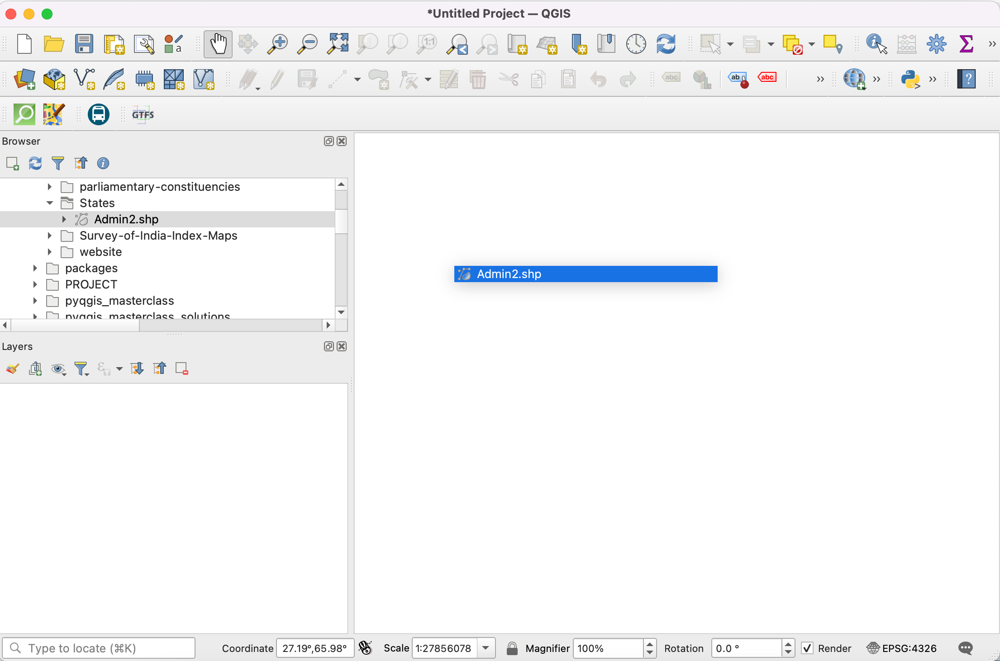

Ujaval Gandhi
Ujaval GandhiOngeldige geometrieën afhandelen (QGIS3)¶
Bij het werken met lagen met vectorgegevens zou u fouten in geometrieën tegen kunnen komen. Deze fouten worden vaak deel van uw gegevens nadat u ze hebt verwerkt, gedigitaliseerd, bewerkt of de gegevens hebt geconverteerd. QGIS3 heeft ingebouwde gereedschappen om ongeldige geometrieën te detecteren en te repareren. Deze handleiding laat u een typische werkstroom zien voor het afhandelen van ongeldige geometrieën in uw gegevens.
Notitie
Different software systems implement different notions of geometry validity. But the leading standard for the geometry model for use in a GIS is the OGC Simple Features Specifications (SFS). In this tutorial, we will use GEOS library to check for geometry validity which uses this standard. This post gives a good overview of common geometry errors as defined by the OGC standard.
Overzicht van de taak¶
We zullen werken met een laag met administratieve grenzen voor India en een fout in de geometrie voor een polygoon van een staat repareren.
Andere vaardigheden die u zult leren¶
Het algoritme Topologische kleuring gebruiken om een kleurenschema toe te passen op een polygoonlaag.
De gegevens ophalen¶
Datameet verschaft door de gemeenschap gemaakte Shapefiles voor administratieve grenzen voor India.
Download het Datameet Spatial Data Repository [~150 MB] zip-bestand. Het gedownloade archief bevat meerdere mappen. Pak het archief uit en gebruik de bestanden in de map States/.
Gegevensbron: [DATAMEET]
Procedure¶
Blader naar het gedownloade bestand
India-States.zipin QGIS Browser. Vergroot het en sleep het bestandIndia-States.shpnaar het kaartvenster.

U zult een nieuwe laag
India-Stateszien geladen in het paneel Lagen. Ga naar .

We zullen proberen een algoritme van processing uit te voeren op de invoerlaag om te demonstreren hoe ongeldige geometrieën problemen kunnen veroorzaken bij bewerkingen voor geoverwerking. Zoek naar en lokaliseer het algoritme . Dubbelklik er op om het te starten.

Selecteer, in het dialoogvenster Topologische kleuring,
India-Statesals de Invoerlaag. Laat alle andere parameters op hun standaard staan en klik op Uitvoeren.

Notitie
The Topological coloring algorithm implements an algorithm to color a map so that no adjacent polygons have the same color. This is a useful cartography technique and the Four Color Theorem states that 4 colors are enough to achieve this result. There is a graph-theory version of this theorem called Five color theorem. The QGIS algorithm implementation is based on graphs so in practive you will see that complex polygon layers such as this will require upto 5 colors.
Als het algoritme wordt uitgevoerd zult u een waarschuwing zien weergegeven op de tab Log. 1 object op de invoerlaag had een ongeldige geometrie en werd bij de verwerking overgeslagen. De standaard instelling voor het afhandelen van ongeldige geometrieën in de Processing Toolbox is geplaatst in en is ingesteld op
Objecten met ongeldige geometrieën overslaan (negeren). Dit is een goede standaard instelling, maar als uw invoer groot is zou u deze waarschuwing kunnen missen en zou u niet weten dat een invoerobject was overgeslagen. U zou misschien de waarde willen wijzigen naarUitvoeren van algoritme als een geometrie ongeldig is stoppen.

Terug in het hoofdvenster van QGIS zult u een nieuwe laag
Gekleurdzien toegevoegd aan het paneel Lagen. Merk op dat de laag een staat mist die een ongeldige geometrie had. We weten nu dat deze bepaalde polygoon van een staat een ongeldige geometrie had, maar we weten niet de oorzaak daarvan. We kunnen dat gemakkelijk uitzoeken. Zoek naar en lokaliseer het algoritme .

Selecteer, in het dialoogvenster Geldigheid controleren,
India-Statesals de Invoerlaag. SelecteerGEOSals de Methode. Klik op Uitvoeren.

Als de verwerking is voltooid zult u 3 nieuwe lagen zien in het paneel Lagen -
Geldige uitvoer,Ongeldige uitvoerenFout bij uitvoer. De laagFout bij uitvoerbevat de locaties en beschrijvingen van de fouten in de geometrieën. Klik met rechts op die laag en selecteer Attributentabel openen.

Notitie
The QGIS documentation has a detailed article on Types of error messages and their meanings that explains the causes of all the errors.
U zult zien dat het foutbericht Ring is zelf kruisend is. Selecteer de rij en klik op de knop Naar object zoomen. Als u inzoomt, zult u de bron van de oorzaak van de fout in de geometrie zien.

QGIS heeft een ingebouwd algoritme om automatisch fouten in geometrieën te repareren. Zoek en lokaliseer het algoritme . Dubbelklik er op om het uit te voeren.

Selecteer, in het dialoogvenster Geometrieën repareren,
India-Statesals de Invoerlaag en klik op Uitvoeren.

Een nieuwe laag
Vaste geometrieënzal zijn toegevoegd aan het paneel Lagen. Op dit punt is de fout in de geometrie gerepareerd en kunt u zonder problemen elk algoritme van Processing uitvoeren. Maar we kunnen zien dat er nog steeds een gat is tussen aansluitende polygonen wat onverwacht is en in de vervolgstappen topologische fouten zou kunnen veroorzaken. We ook dit repareren door de polygoon te bewerken. Klik op de knop Bewerken aan-/uitzetten op de werkbalk Digitaliseren. Selecteer het Gereedschap Punten en selecteer in het keuzemenuGereedschap Punten (Huidige laag).

Klik, als het gereedschap punten actief is, op een punt om het te selecteren. U kunt op de toets Delete drukken om een punt te verwijderen of er aan slepen om het te verplaatsen. U kunt het punt verplaatsen zodat de rand van de polygoon nu de aansluitende polygoon raakt.

Indien gereed, klik opnieuw op de knop Bewerken aan-/uitzetten en klik op Save.

Laten we het algoritme nogmaals uitvoeren.

Zorg er voor, in het dialoogvenster Topologische kleuring, dat u
Vaste geometrieënselecteert als de Invoerlaag. Klik op Uitvoeren.

U zult zien dat het algoritme wordt uitgevoerd zonder fouten en een nieuwe laag
Gekleurdzal zijn toegevoegd aan het paneel Lagen. Onthoud dat het algoritme niet zelf de laag kleurt, maar werkt met een nieuw toegevoegde kolomcolor_idaan elke polygoon die kan worden gebruikt om een unieke kleur toegewezen te kunnen worden die anders is dan die van aansluitende polygonen. Selecteer de laagGekleurden klik op de knop Paneel Laag opmaken openen.

Selecteer de renderer
Categorieën` en de kolom ``color_idals de Waarde. Klik op Classificeren. U zult nu zien dat de kaart gekleurd wordt en dat aansluitende polygonen verschillende kleuren hebben.

If you want to give feedback or share your experience with this tutorial, please comment below. (requires GitHub account)